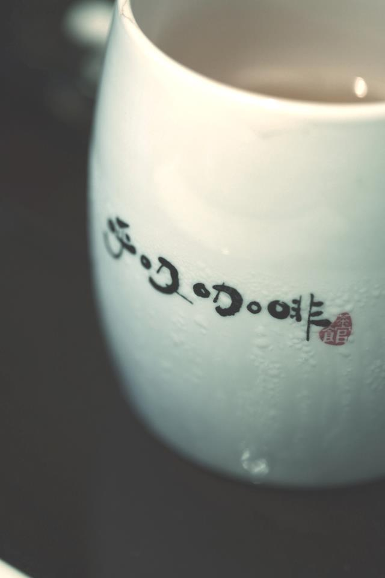

| 呼吸音樂 這些年，一直也想不明白，台灣、甚至內地都有許多特別的餐廳、咖啡館，那裡有一個開放的舞台，一個給當地樂團表演的空間。 為什麼為獨是香港，欠缺這種讓人們單純互相欣賞、好好交流音樂的地方呢？ 是不是非要商業化不可呢？ 去年，呼吸在昆明建了一間玻璃屋咖啡館，每個星期、三個晚上的表演， 引來了世界各地，或甚少數民族的音樂，他們不用是紅透半天的樂團， 玻璃屋內，表演者只是透過他們由心純粹的音樂， 把對味的人們凝聚在一起。 那些晚上，貼心、快樂。 這一年，香港的呼吸咖啡也想做同一件事， 這一件很喜歡但又不太懂的事。 於是，我們在香港，用心築起這個小小的台板，只想為著身處狹小的香港， 沒有空間但仍然緊緊懷抱、由衷喜歡清新音樂的你們， 建造起這個分享音樂的平台。 人們也許視這種是吸引客源的噱頭，然，傲氣卻真實的， 呼吸不用靠這點來營運，我們也不在乎放多一枱兩桌，即使沒有人來表演，這塊台板是不會拆下來的， 我們會把這個舞台一直保留，保留到呼吸關門的那一天。 自由的表演氣氛，能不能在香港蔓延開來，也只好隨緣了。 當然， 我們深深希望，你們會喜歡呼吸音樂！ 深深希望，人們因著你們的歌聲和弦，被一點一點地改變， 有一天，打開心門，因著你們分享的音樂，變得簡單而快樂！ 呼吸打開門，等你們來表演！ 一齊黎玩啦！唔好收收埋啦！！！ |
 |
|---|